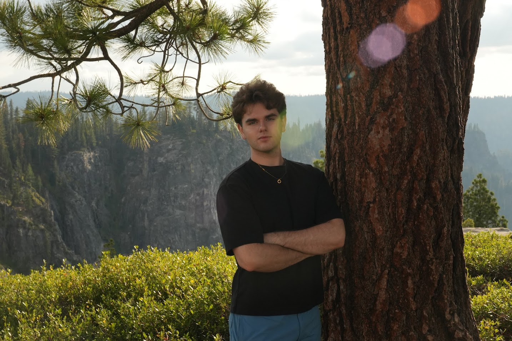

I create things. Sometimes that means writing Python scripts to audit tax residency, and other times it means designing redstone contraptions in Minecraft. My philosophy is simple: build tools that I actually need, make them look good, and make them work for everyday people.
My path wasn't linear. I was born in El Paso, TX, but spent 14 years growing up in Mexico before moving to Fresno to live with my uncle. Now at Berkeley, I try to balance the screen time with real life. When I'm not coding, you can usually find me at the gym, woodworking, or exploring nature. I love the offline creative process too, like practicing guitar, editing videos in Premiere Pro, or just pencil sketching.
I am really just doing whatever I can to enjoy life and figure out my purpose in this world. I build these small apps and projects to help others, but I'm also doing it to help myself figure out what I want to do next. I'm just creating stuff along the way, but the real project right now is building me.